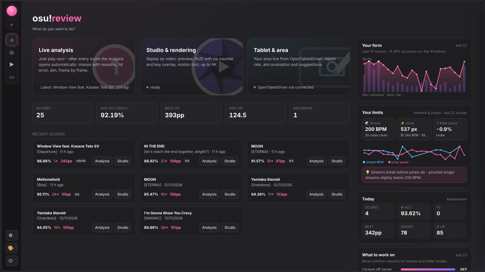
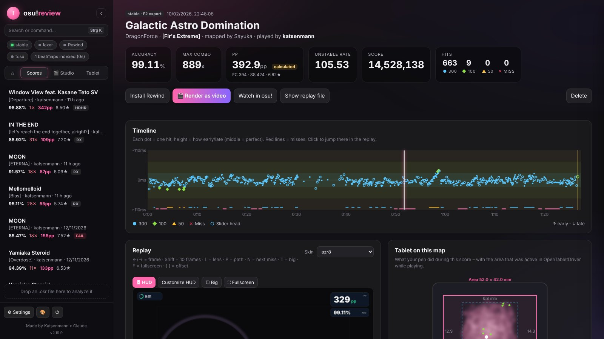
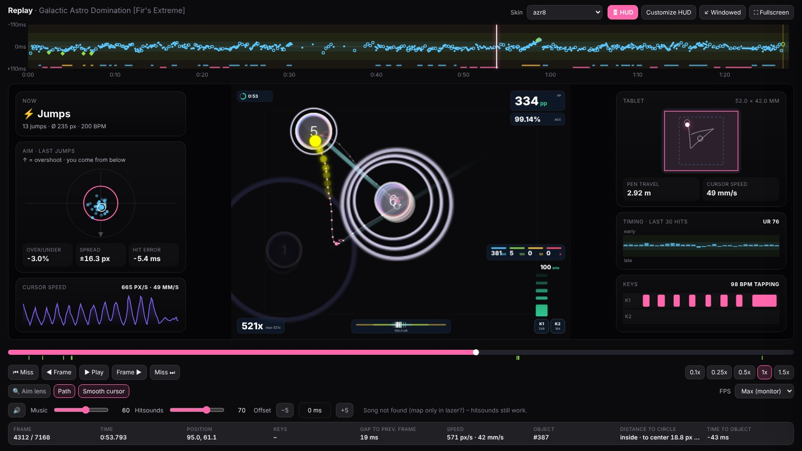
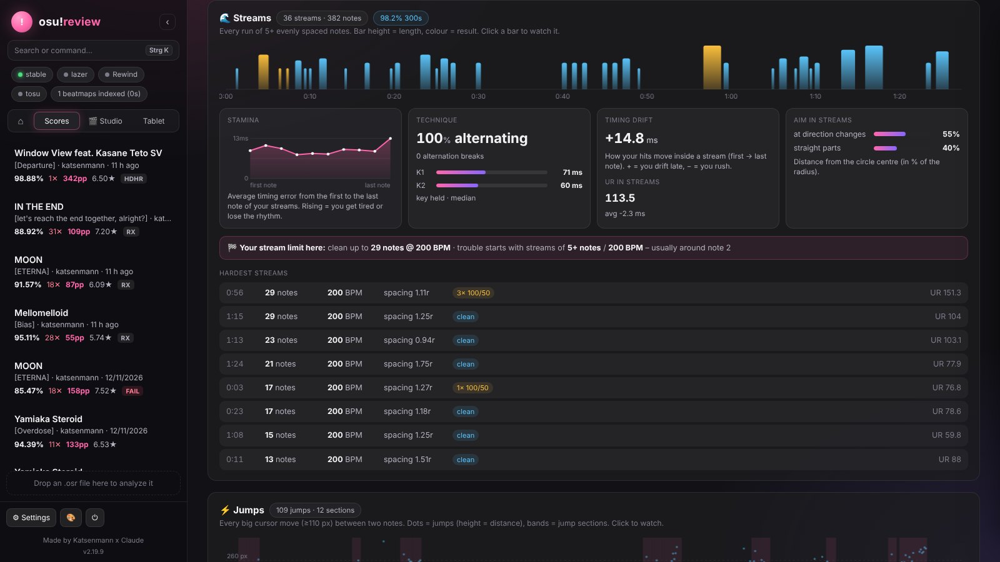

osu!review analyses every score the moment you finish it – misses with reasons, hit error, aim, streams and jumps, your tablet area – and renders your replays as video.
It runs in the background and opens on its own when you finish a map. No uploading, no waiting – everything stays on your PC.
Every miss and slider break with the reason – clicked off target, note lock, too early or late, slider end – replayed with osu!'s own rules.
Your skin, the song and hitsounds, frame by frame, aim lens, cursor path, and a switch to turn Hidden off.
In the big view: what's happening now, aim on your last jumps, cursor speed, your pen on the tablet, hit timing and keys.
Stamina curve, timing drift, alternation, over/undershoot by distance and direction – and your stream and jump limits.
Your OpenTabletDriver area live, report rate, and an overall rating of your area from all your replays.
Render replays to video with danser-go – HUD with pp counter and key overlay, motion blur, up to 4K.
Real scores, real analysis.

Home – your form, your limits, today's session and what to work on.

Every hit on a timeline, every miss explained.

Big replay view with live aim, tablet, timing and keys.

Streams and jumps – where your limits are.
No installer wizard, no account.
Get the ZIP from Releases and unzip it somewhere it can stay, e.g. Documents\osu-review.
Creates a desktop shortcut and, if you like, autostart. Python is fetched automatically if you don't have it.
Start osu!review and play osu! as usual – the analysis opens after every score.
Needs: Windows 10/11 and osu!stable or osu!lazer. Optional: OpenTabletDriver for tablet stats, tosu.
Updating: run Uninstall.bat in the old folder, pick 1 (keeps your scores), then install the new version.